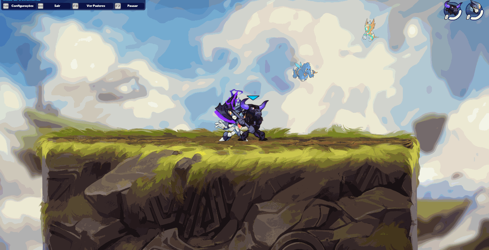
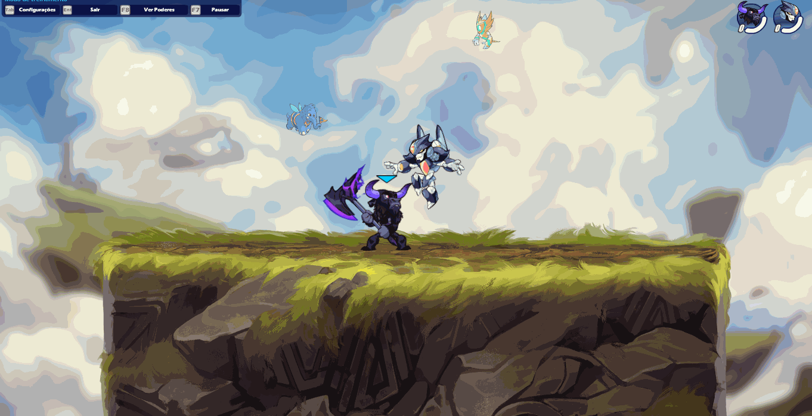
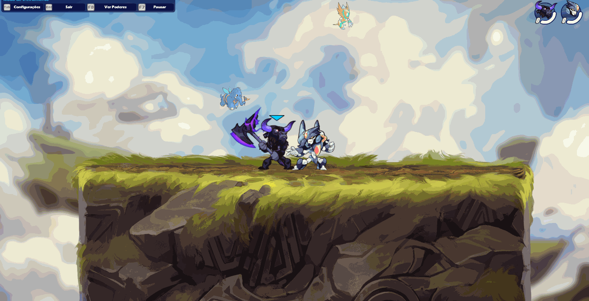
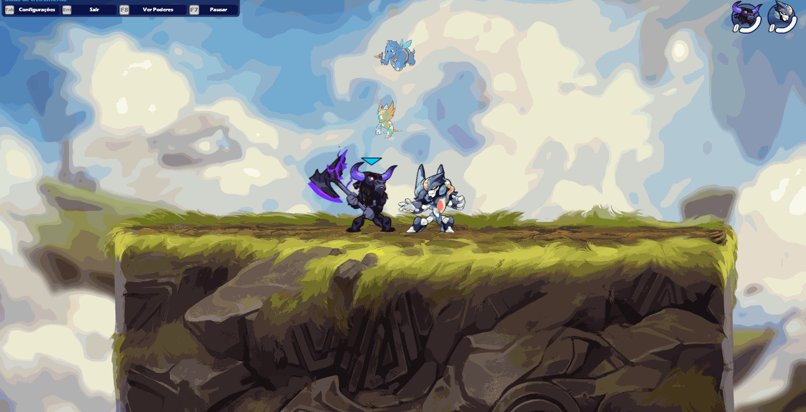

"Arma de força bruta, capaz de desferir golpes extremamente fortes. Derrubar até mesmo os inimigos mais resistentes."
"Arma de força bruta, capaz de desferir golpes extremamente fortes. Derrubar até mesmo os inimigos mais resistentes."
O machado é uma arma poderosa e letal, seus ataques causa
dano significativos em cada golpe. Com sua aparência intimidadora e
seu alcance impressionante, o machado é a arma da força bruta, perfeita para jogadores
que preferem um estilo de jogo mais agressivo e direto ou, que só querem matar seus oponentes em poucos hits.
Uma das principais vantagens do machado é sua capacidade de
causar danos críticos com cada golpe.
é importante lembrar que o machado também tem suas limitações. Sua natureza pesada e
lenta pode tornar difícil enfrentar inimigos mais ágeis e evasivos,
e sua falta de combos pode tornar o jogador previsível para jogadores mais experientes.


O usuário balança o machado para o lado. Quando atingido, o inimigo será imobilizado e receberá hits, causando knockback.

O usuário atinge o chão com machado, atgindo inimigos que estiver no seu alcance.

O usuário utiliza o machado para atacar diagonalmente para cima.
O ataque consiste em usar o machado para atacar na parte de cima, acertando inimigos que estejam no ar.
Ataca com o machado para os lados, causando muito knockback.
O usuário cobre a área abaixo dele com um ataque.
O usuário salta diagonalmente para cima enquanto gira o machado em torno do corpo.

O usuário giro o machado em torno de si mesmo enquanto cai.